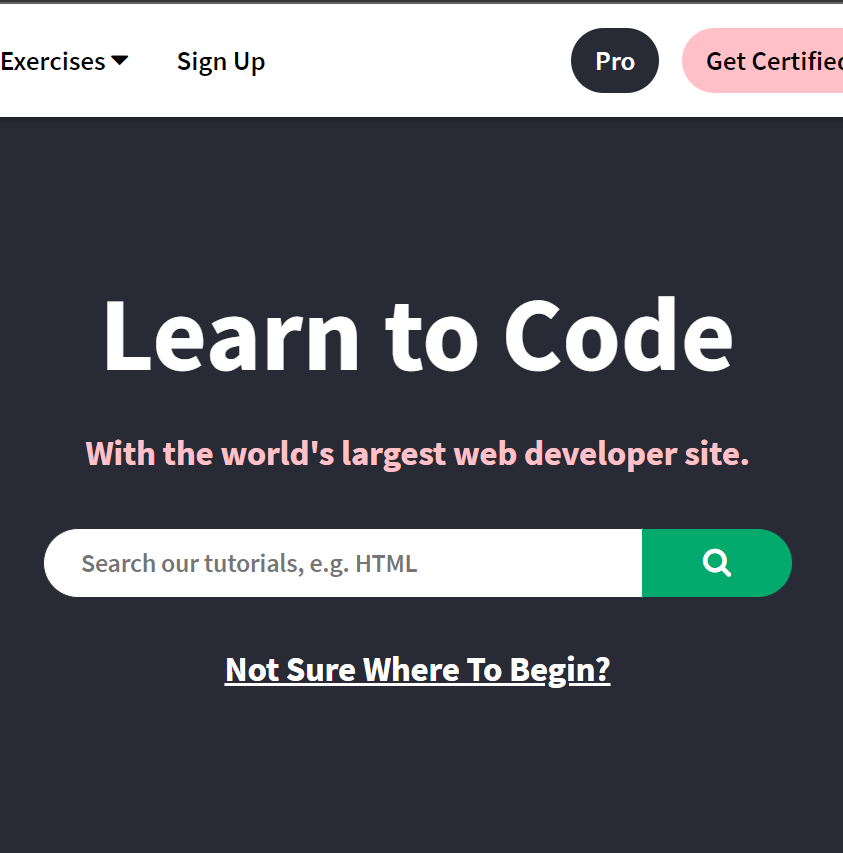
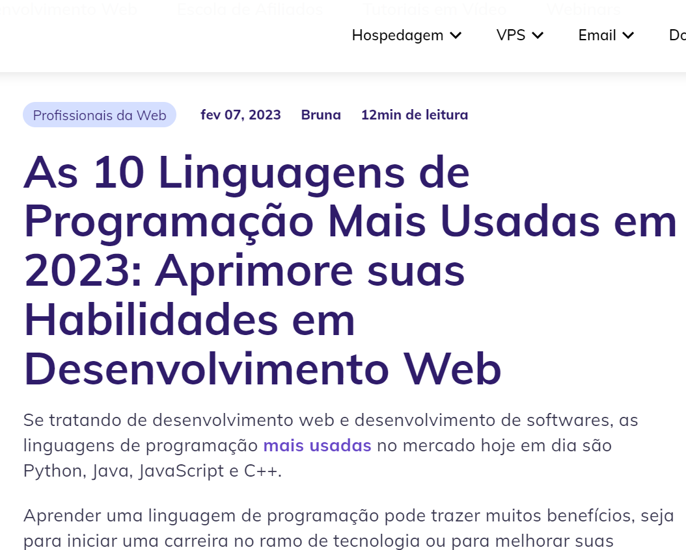
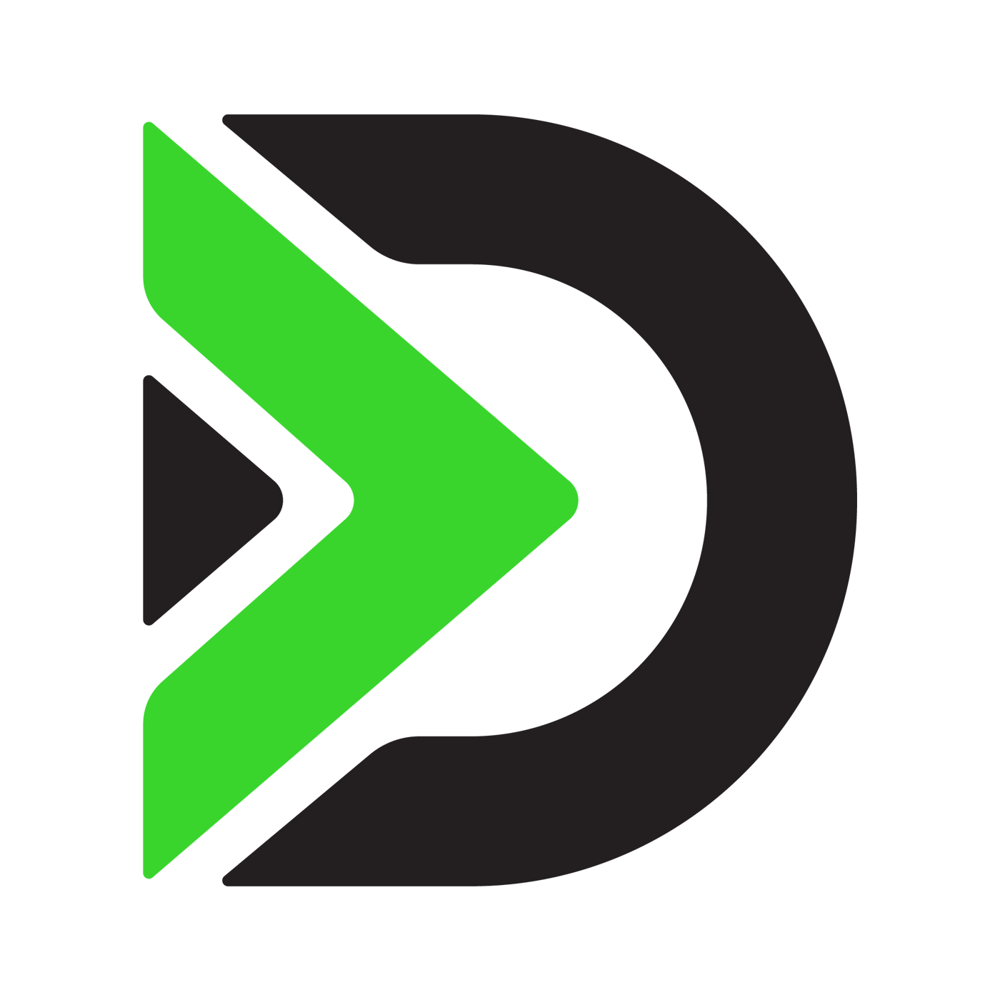
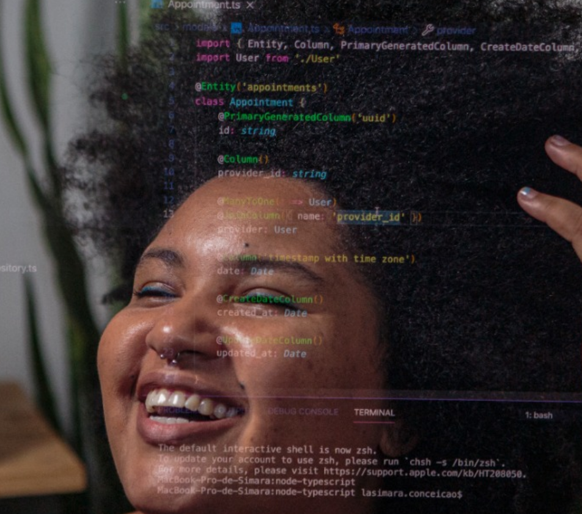
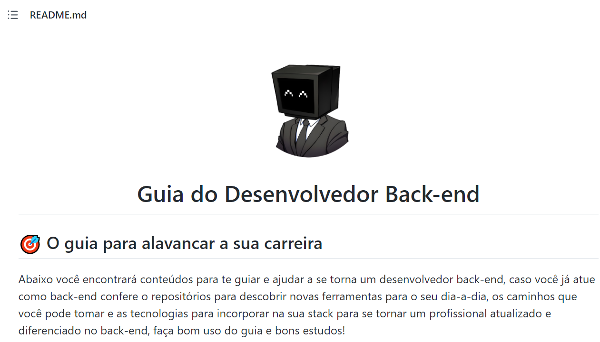
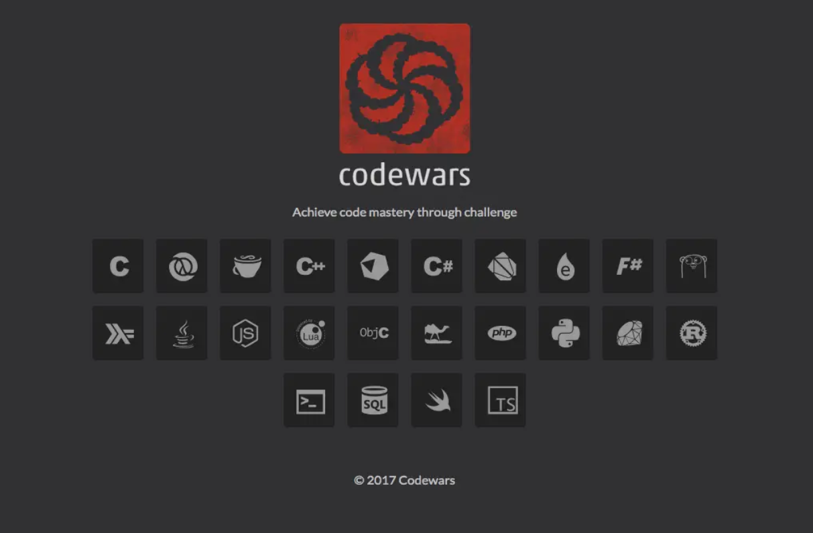

Kinsta é uma plataforma para equipes dev que contém um blog com diversos
artigos relacionados ao desenvolvimento web, com informações sobre a profissão,
linguagens e tutoriais.

W3schools
O W3Schools é um website que contém tutoriais escritos práticos tanto de
front-end, quato de backend. Há tutorias de Python, Java, C, Kotlin e
TypeScript.

Hostinger
As 10 linguagens de programação mais usadas em 2023. Aprimore suas
habilidades em desenvolvimento web.
Python. C#. C++.
Podcasts
Fábio Akita
Python? java? Rust? Qual a diferença? Ne episódio #136 do podcast Akitando,
Fábio Akita discute sobre linguagens de programação.

DevNaEstrada
Nesse episódio o papo é sobre Entrosamento entre Frontend e Backend. Emilio
Aiolfi juntamente com convidado especial Alisson Perez conversam sobre suas
experiências na interação entre front e back.

Quero ser Dev
Iniciar na programação e dar de cara com todos os conceitos e linguagens não
é nada fácil. Neste episódio, Simara e Analu discutem os principais conceitos do
backend para iniciantes.
Outros

Repositório GitHub
Esse repositório é um guia com mapas mentais, cursos, trilhas e demais
ferramentas para o aprendizado de backend.
Attekita Dev
A prática é fundamental para otimizar seus estudos. Neste vídeo, Attekita dev
traz 5 projetos para a prática do back-end.

Codewars
Codewars é uma platafora para Devs praticarem seus conhecimentos em backend a
partir de jogos e desafios.